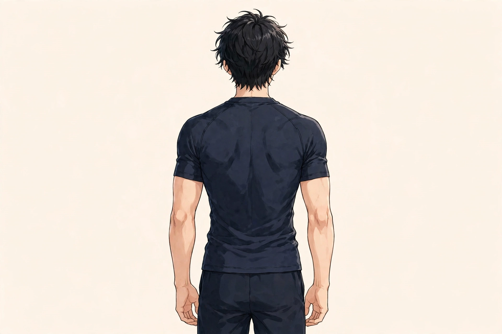

東三国で50代に気になる肩こり
男性の年代と日常の過ごし方、セルフケア、受診の目安

「若いころは一晩寝れば気にならなかったのに、50代に入ってから朝から肩まわりが重い日が増えた」「デスクワークの終わりには、首から肩が張って頭まで重く感じる」。東三国や新大阪、淀川区周辺で働く50代の男性から、肩こりにまつわるこうした声を聞くことがあります。50代の肩こりの感じ方や背景は人によって異なり、一つの原因だけで説明できるものではありません。この記事では原因を断定するのではなく、50代の肩こりについての一般的な考え方と、考えられる要因、年代を踏まえた日常の過ごし方とセルフケア、医療機関に相談したほうがよい目安をまとめます。デスクワークの場面に絞ったデスクワークの肩こりについてのコラムとは視点を分け、ここでは「50代という年代」に焦点を当てます。お悩み別のページでも肩こりや五十肩としてまとめています。
50代の肩こりとは：一晩寝ても抜けにくくなった首・肩まわりの張り
「肩こり」は正式な病名ではなく、首から肩、背中の上部にかけての重さや張り、こわばりといった感覚を指して使われることが多い言葉です。50代は、若いころと比べて回復の感じ方が変わってきたと自覚する方も多い年代で、「寝れば治っていたものが、朝から残っている」という出方の変化を訴える声があります。同じ肩こりでも、「朝の起き抜けに感じる」「画面作業の続く日の夕方に感じる」「運転のあとに感じる」など、出方や場面は人それぞれです。まずは「どの場面で、どの程度の張りを、どれくらいの期間感じているか」「若いころと比べて何が変わったか」を自分の言葉で整理しておくと、日常の過ごし方の見直しの手がかりや、専門家に相談するときの伝え方がスムーズになります。
考えられる要因の整理
50代に肩こりを意識する背景には、年代による体の変化に、長年の仕事や生活の積み重ねが重なっている場合があります。以下は代表的なものとして挙げられる要因ですが、当てはまるかどうかや程度は人によって異なります。
肩こりを感じやすい部位の位置は、図1のとおりです。

僧帽筋は首から肩、背中の中央まで広がる大きな筋肉です。肩甲挙筋は首の横から肩甲骨の内側上部につながります。肩甲骨の下には棘下筋があり、肩の動きを支えています。位置は目安です。
- 筋肉量と筋力の変化：加齢とともに筋肉量は少しずつ減りやすいとされ、頭や腕を支える首・肩まわりの筋肉が若いころより働きにくくなると、同じ姿勢でも張りや重さとして感じやすくなる場合があります。
- 長年の姿勢の積み重ね：デスクワークやスマートフォンの使用で続いてきた前かがみの姿勢、猫背や巻き肩といった癖が、首・肩まわりの緊張の出方に関わる場合があります。若いころは気にならなかった癖が、年代とともに自覚されやすくなる方もいます。
- 目の疲れと画面作業：50代は老眼が進み、画面や書類との距離が合わずに顔を近づける姿勢が増えやすい年代です。目の疲れと首・肩の張りはあわせて自覚されることが多く、画面の高さや文字の大きさ、眼鏡の度数も見直しの材料になります。
- 肩関節まわりの変化：50代前後では、肩の動かしにくさや夜間の痛みを伴う「五十肩」と呼ばれる状態が話題になることがあります。単なる肩こりと区別がつきにくい場合もあり、腕が上がりにくい、動かすと強く痛むといった様子があるときは、自己判断せず専門家への相談が目安になります（詳しくは五十肩のお悩みページ）。
- 睡眠と回復のリズムの変化：若いころと比べて眠りが浅くなった、夜中に目が覚める、休んでも疲れが残る感じがする、といった変化を50代で自覚する方もいます。回復のリズムの変化が、朝の肩のこわばりや重さの感じ方に関わる場合があります。枕の高さが合っていないことも、朝の張りの一因として挙げられます。
- 運動量の減少と体重の変化：体を動かす機会が減ると、肩甲骨まわりを動かす機会も減ります。体重の増加が重なると、姿勢を支える首・肩まわりの負担が大きくなりやすい、とされます。
- 体の側の要因の可能性：首・肩まわりの張りや痛みの背景には、首の骨や関節の変化のほか、血圧の変化、まれに心臓など内臓の病気が関わる場合もあります。生活習慣だけが要因とは限らない点は、受診の目安とあわせて押さえておきたいところです。
年代を踏まえた日常の過ごし方とセルフケア
50代の体に合わせて、無理なく続けられるものを中心にまとめました。強い力で押したり、痛みを我慢して動かしたりはせず、痛みやしびれがあるときは無理をしないでください。気になる症状が強いときは、セルフケアより先に医療機関への相談をご検討ください。
- 肩回し・肩甲骨回し：指先を肩に置き、肘で大きな円を描くように前回し・後ろ回しを行う動きです（手順は図2）。肩甲骨まわりを大きく動かす意識で、呼吸を止めずゆっくり行ってください。痛みが強いときや、動かすと鋭く痛むときは中止してください。
- 画面と椅子の高さを見直す：画面の上端が目線の高さに近づくよう台やモニターアームで調整する、椅子の高さと肘の位置を合わせるなど、姿勢の土台を整える工夫です。文字が小さい場合は拡大表示も使い、顔を画面に近づけ続けないようにします。
- 首・肩を温める：蒸しタオルや市販の温熱シートなどで、首から肩を心地よく温める方法です。熱すぎない温度で、気持ちよいと感じる範囲にとどめ、低温やけどに注意してください。
- 湯船で肩まで浸かる：シャワーだけで済ませず、ぬるめのお湯に肩まで10〜15分ほど浸かる時間を作る工夫です。湯船の中で肩をゆっくり回す方もいます。
- 荷物の持ち方と腕の使い方：重い荷物は片側だけで持ち続けない、リュックを使う、カートを使うなど、腕や肩への負担を分ける工夫です。買い物や通勤の鞄の持ち方も見直しの材料になります。
- 軽い運動を日常に組み込む：ウォーキングやラジオ体操など、腕や肩甲骨が自然に動く運動を日常に足す方法です。まとまった時間が取れない年代でも続けやすい形として、まずは無理のない範囲から始める方がいます。
- 枕の高さと睡眠環境を見直す：朝の張りが強い方は、枕の高さやマットレスの硬さが体に合っているかが材料になります。年に一度の健康診断で血圧などの数値を確認しておくことも、50代の体の状態を知る手がかりになります。
肩回し・肩甲骨回しの目安は、図2のとおりです。

両肩を大きく回して肩甲骨まわりを動かします。①指先を肩に置く ②肘で大きな円を描くように前回し・後ろ回し各5回 ③呼吸を止めずゆっくり行う、が基本の流れです。
セルフケアは一度に全部をやろうとせず、続けられそうなものを一つ選ぶところから始めるのがおすすめです。感じ方には個人差があり、その日の仕事内容や睡眠、前日の過ごし方によっても変わりますので、無理のない範囲で行ってください。
動画で見るセルフケア
このページのセルフケアは、動画でも紹介しています。動きの流れを確認しながら、無理のない範囲でどうぞ。
医療機関への受診を考える目安
次のような様子がある場合は、セルフケアや当院でのケアの前に、整形外科や内科などの医療機関への相談をご検討ください。当院は医療機関ではなく、症状の診断や治療は行いません。肩まわりの不調の背景には、生活習慣以外の原因が関わる場合もあります。
- 腕や手のしびれ、力が入りにくい感じがある
- 腕が上がりにくい、動かすと強い痛みが続く、夜間に痛みで目が覚める
- 胸の痛みや息苦しさ、左肩から腕にかけての痛みを伴っている（速やかな受診をご検討ください）
- 発熱を伴う、安静にしているときにも強い痛みが続く
- 転倒や事故など、肩に強い衝撃を受けたあとから症状が出ている
- 数週間以上続いてよくなる様子がない、日に日に強くなっている
上記に当てはまらなくても、気になる症状が続くときは、早めに医療機関や専門家へ相談することが大切です。自己判断だけで様子を見続けないことも一つの目安になります。
北辰堂のご案内
北辰堂は、大阪市淀川区東三国二丁目にある男性専用の整体院です。施術歴30年の平賀伸人（鍼灸師・国家資格）が、整体とリラクゼーションを行います。当院では鍼灸施術は行いません。営業は平日・土曜17:00〜22:00、日曜10:00〜22:00の完全予約制です。50代で肩こりが気になる方は、平日・土曜の夕方や日曜の時間帯に、仕事や日常の過ごし方も含めてご相談いただけます。プライバシーへの配慮のため、詳しい住所はご予約確定後にLINEでご案内します。
料金は60分 初回2,000円／2回目以降6,000円、90分 初回3,000円／2回目以降9,000円で、お支払いは現金のみです。施術を受けたからといって体の状態がどうなるかをお約束することはできませんが、その日の体の状態を確認しながら、痛みや張りのある部位だけでなく姿勢全体の様子も見て、ゆっくり体を預けられる時間をご用意しています。仕事での座り方や画面の見方、休みの日の過ごし方など、日常で気になっていることも、カウンセリングの際にお聞かせください。気になるお悩みの例は北辰堂についてにもまとめています。
コースの内容はメニュー・料金、施術者は施術者について、ご予約の流れは当日の流れとLINE予約の下書きづくり、場所についてはアクセスをご覧ください。あわせてデスクワークの肩こりについてのコラムや50代の腰の重さについてのコラム、よくある質問もご参考ください。
ほかのコラム記事
関連するお悩みページ
ご予約・ご相談はLINEから
東三国・新大阪・淀川区周辺で、体のケアの相談先をお探しの方は、LINE公式アカウント（北辰堂）からお気軽にご連絡ください。現在の状態をお聞きしたうえで、施術の進め方をご案内します。
LINEで予約するさらに学びたい方へ：現場で使われる専門書（PR）
このページのテーマに合わせて選んだ本と、当店の施術でも参考にしている専門書です。


※本ブロックのリンクはAmazonアソシエイト・プログラムおよび楽天アフィリエイトによる広告リンクです。使用感の保証をするものではありません。